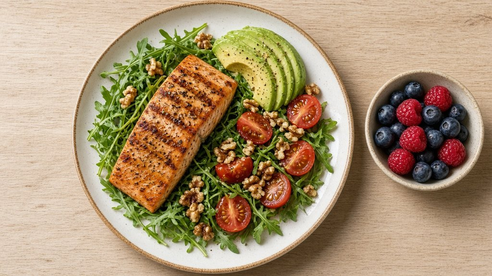

Free joint comfort guide
Stiff Knees in the Morning? Try These 7 Gentle Moves
Free large-print guide. About 5 minutes, mostly seated.
7 Gentle Morning Moves
Large-print guide for joint comfort and mobility
- Simple movements you can do mostly seated
- About 5 minutes each morning
- Designed for adults over 45
- No equipment needed
Get Your Free Guide
Enter your email and we'll send you the PDF.
Thank you! Your free guide is ready.
📄 Open My Free Guide (PDF)When you're ready, keep scrolling for more simple habits for comfortable joints. 👇
Why Do My Joints Feel Stiff in the Morning?
You swing your legs out of bed and your knees and hips feel stiff. That first hour can be the hardest part of the day.
If that sounds familiar, you’re not alone. After hours of rest, joints may need gentle movement to feel more comfortable.
Quick Facts: Joint-Friendly Living
| Best morning habit | 2–3 minutes of gentle stretching |
| Key daily habits | Move often, stay hydrated, eat colorful whole foods |
| Most overlooked | Strengthening muscles around joints |
| Simple goal | 10 minutes each morning before coffee |
What Causes Joint Stiffness After 45?
Your joints are cushioned by cartilage and lubricated by synovial fluid, a gel-like fluid that helps bones glide smoothly.
Over time, everyday wear, less movement, and changes in hydration and nutrition can affect how comfortable and flexible your joints feel. It’s not just the stiffness—it’s the slow start to every single day, thinking twice before the stairs, or before getting down on the floor with the grandkids.
What Helps Joint Stiffness Naturally?
Maybe you’ve taken glucosamine, turmeric, or collagen for months and didn’t notice much of a difference. If so, you’re in good company.
Often the missing piece isn’t another pill. It’s a simple daily routine built on gentle movement, hydration, and joint-friendly eating.
What Are the Best Habits for Healthy Joints?
Five everyday habits that support joint comfort:
- Move a little, often. Gentle walking, swimming, or cycling keeps joints active. Try to stand up and stretch every 30–60 minutes.
- Stretch in the morning. 2–3 minutes of slow ankle circles, knee lifts, and shoulder rolls can help you feel less stiff.
- Strengthen the muscles around your joints. Simple exercises like chair squats support your knees and hips.
- Drink enough water. Hydration matters for your whole body, including the tissues around your joints.
- Eat colorful, whole foods. Leafy greens, fatty fish, berries, nuts, and olive oil are part of a balanced, joint-friendly diet.

Start with just 10 minutes each morning, before coffee.
Go slow and gentle, and never push into pain. If something hurts, stop and check with your doctor.
Fair questions before you consider any supplement
You may have heard a doctor say supplements are just a placebo. Before you consider any product, it helps to have a few simple questions ready. Here’s how I look at any joint product, including the one below:
- Can you see every ingredient and amount? Skip vague “proprietary blends.”
- Is the wording honest? Look for “supports,” not “cures” or “instant results.”
- Is there a clear refund policy? Read the terms on the official site yourself.
- Talk to your doctor if you take any medication.
A supplement is not a replacement for movement, water, and good food. At most, it’s one extra piece that supports what you’re already doing.
What “better” could look like
Getting out of bed without needing the first hour to warm up. A simple 10-minute routine you can actually do every single day. Taking the stairs or a walk without thinking twice.
Small habits come first. Some people also like to add nutritional support.
One option I’ve looked into: Joint Genesis™
If you’ve gone through the questions above and want to look at a supplement to go with your morning routine, one option I've been researching is Joint Genesis™. The company describes it as a doctor-formulated supplement that combines several joint-supporting nutrients with Mobilee®, an ingredient studied for its role in supporting synovial fluid.
According to the company, it's designed to support mobility, flexibility, a healthy inflammatory response, and joint comfort. It isn't a magic fix, and results vary from person to person.
If you'd like to learn more and decide for yourself, you can take a short quiz on the company's website. It asks a few simple questions and then shows you the company's own product information:
👉 Take the 60-second Joint Pain Type quizOpens the company's quiz page (affiliate link)Disclosure: I earn a commission if you buy. Last updated: November 1, 2026. Official product information is on the company's page. Views are my own, not the company's.
Buy only from the official website. To make sure you get the genuine product and the company's guarantee, order only through the official Joint Genesis™ website, not from third-party sellers or marketplaces.
Always talk to your doctor before starting any new supplement, especially if you take medication or have a medical condition.
About Healthy Joints Daily
Healthy Joints Daily is an independent affiliate site sharing joint-friendly habits for adults 45 and older. We focus on gentle movement, everyday nutrition, and practical routines that support joint comfort.
Not medical advice: This site is run by an independent affiliate, not a doctor or healthcare professional. Educational content only. Always talk to your doctor before starting any new supplement or exercise program.
Last updated: November 1, 2026
Quick recap
Move often, stretch gently each morning, build a little strength, stay hydrated, and fill your plate with colorful whole foods. Small habits, done consistently, are a great foundation for staying active as you age.
Take the short Joint Pain Type quizAffiliate link: I earn a commission if you buy
Disclosure: I earn a commission if you buy. Last updated: November 1, 2026. Official product information is on the company's page. Views are my own, not the company's.
Sources and further reading
The everyday habits on this page are based on general guidance from these reputable health organizations:
- Arthritis Foundation: 8 Ways Exercise Helps Your Joints
- Arthritis Foundation: Osteoarthritis
- Mayo Clinic: Exercise helps ease arthritis pain and stiffness
- National Institute on Aging (NIH): Exercise and Physical Activity
- National Institute on Aging (NIH): Osteoarthritis
- NIAMS (NIH): Osteoarthritis
These organizations do not endorse this site or any product mentioned on it.
Stiff Knees in the Morning? Try These 7 Gentle Moves
Free large-print guide. About 5 minutes, mostly seated.
Thank you! Your free guide is ready.
📄 Open My Free Guide (PDF)When you're ready, keep scrolling for more simple habits for comfortable joints. 👇
Contact
Have a question or comment? For now, the best way to reach me is through the Healthy Joints Daily YouTube channel. You can also read more about me and this site.